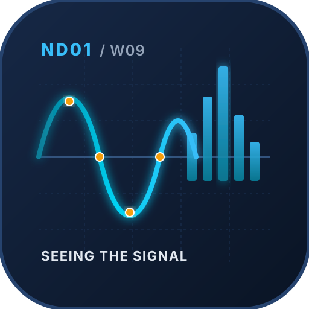

Arrows / Page Up / Page Down / Space: navigate · Home / End: first / last · F: fullscreen · O: all slides · ?: help · Esc: close a dialog or leave fullscreen.
Keyboard navigation pauses while a form control is focused, so sliders keep their arrow keys. Use Tab and Enter for every control. Print creates a static text reference for all slides; use the HTML for interactive plots.
Everything in this presentation works offline. Source links open GitHub and need internet. Python commands run in your terminal; the browser does not train models, flash firmware or connect to a board.